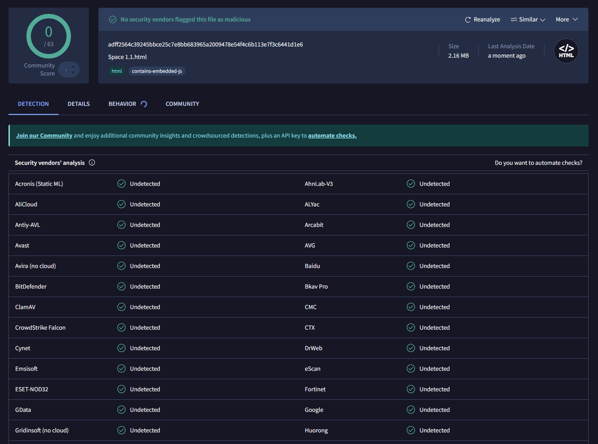

Tarea 01. Mapa conceptual. Antivirus. Casos de éxito.
Parte A
M A P A M E N T A L
Parte B
Según la información obtenida el mejor antivirus es Kaspersky en calidad/precio
Parte C
Realiza una búsqueda e investigación en Internet de información sobre Bernardo Quintero y comenta:
¿Algo sobre la biografía y trabajo de Bernardo?
Bernardo Quintero es un destacado ingeniero de seguridad informática, conocido principalmente por ser el fundador de VirusTotal, una herramienta que permite analizar archivos y URLs en busca de virus y malware. Nació en Málaga, España, y desde joven mostró un gran interés por la programación y la ciberseguridad. A los 15 años, creó su primer antivirus para eliminar un virus que había infectado su PC.
Señala los hechos más importantes en su carrera:
Fundación de VirusTotal: En 2004, Quintero fundó VirusTotal, una plataforma que permite analizar archivos y URLs en busca de malware.
Adquisición por Google: En 2012, Google adquirió VirusTotal, lo que permitió a Quintero y su equipo seguir trabajando desde Málaga.
Creación de Chronicle: VirusTotal se integró en Chronicle, la división de ciberseguridad de Alphabet, la empresa matriz de Google.
Contribución a la ciberseguridad global: VirusTotal ha sido crucial en la detección de amenazas globales, como el ataque de WannaCry en 2017
¿Qué es lo que más te ha llamado la atención sobre su trayectoria?
El hecho de que fuese capaz de crear un antivirus con tan solo 15 años.
¿Qué puedes sacar?
Puedo sacar que Bernardo Quintero es un especialista en el campo de la ciberseguridad, conocido principalmente por fundar VirusTotal, un servicio en línea que analiza archivos y enlaces en busca de contenido malicioso como virus, gusanos y troyanos.
Utiliza la web VirusTotal.com para escanear algún archivo de tu PC

Parte D
Completa el juego Adivina mi contraseña y adjunta una captura de pantalla con las 8 respuestas